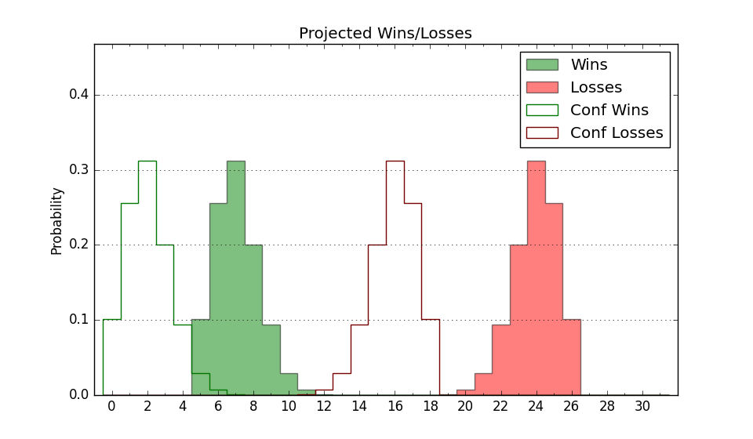

| Home | Game Probabilities | Conferences | Preseason Predictions | Odds Charts | NCAA Tournament |
| City: | Nashville, Tennessee | |
| Conference: | SEC (13th)
| |
| Record: | 0-5 (Conf) 5-13 (Overall) | |
| Ratings: | Comp.: -3.7 (203rd) Net: -4.9 (220th) Off: 99.6 (260th) Def: 104.4 (172nd) SoR: 0.0 (178th) |
| Remaining | ||||||
|---|---|---|---|---|---|---|
| Date | Opponent | Win Prob | Pred. | |||
| 1/27 | Tennessee (4) | 6.2% | L 60-78 | |||
| 1/31 | @ Auburn (7) | 2.2% | L 59-85 | |||
| 2/3 | Missouri (115) | 42.2% | L 68-70 | |||
| 2/6 | Kentucky (21) | 13.4% | L 72-86 | |||
| 2/10 | @ South Carolina (69) | 9.3% | L 58-72 | |||
| 2/13 | Texas A&M (36) | 17.5% | L 63-73 | |||
| 2/17 | @ Tennessee (4) | 1.9% | L 55-83 | |||
| 2/21 | Georgia (88) | 33.3% | L 67-72 | |||
| 2/24 | @ Florida (43) | 6.3% | L 66-86 | |||
| 2/27 | @ Arkansas (98) | 14.3% | L 65-77 | |||
| 3/2 | LSU (83) | 31.8% | L 68-74 | |||
| 3/6 | @ Kentucky (21) | 4.3% | L 68-90 | |||
| 3/9 | Florida (43) | 18.8% | L 71-82 | |||
| Previous | Game Score | |||||
| Date | Opponent | Win Prob | Result | Off | Def | Net |
| 11/7 | Presbyterian (297) | 81.3% | L 62-68 | -19.8 | -3.4 | -23.2 |
| 11/10 | USC Upstate (303) | 81.8% | W 74-67 | 5.6 | -12.9 | -7.3 |
| 11/14 | UNC Greensboro (113) | 41.6% | W 74-70 | 14.5 | 0.4 | 14.9 |
| 11/17 | Central Arkansas (345) | 91.1% | W 75-71 | -13.0 | -11.6 | -24.6 |
| 11/23 | (N) North Carolina St. (82) | 20.1% | L 78-84 | 3.0 | 6.1 | 9.0 |
| 11/24 | (N) Arizona St. (111) | 27.2% | L 67-82 | 6.8 | -19.5 | -12.7 |
| 11/29 | Boston College (86) | 33.1% | L 62-80 | -3.9 | -15.1 | -18.9 |
| 12/2 | Alabama A&M (346) | 91.3% | W 78-59 | 1.4 | 9.6 | 11.0 |
| 12/6 | San Francisco (57) | 22.3% | L 60-73 | -6.0 | -11.6 | -17.5 |
| 12/16 | (N) Texas Tech (33) | 9.8% | L 54-76 | -7.7 | -7.2 | -14.8 |
| 12/19 | Western Carolina (120) | 44.0% | L 62-63 | -13.4 | 12.2 | -1.1 |
| 12/23 | @Memphis (55) | 7.6% | L 75-77 | 6.3 | 8.9 | 15.2 |
| 12/30 | Dartmouth (326) | 86.8% | W 69-53 | -4.1 | 5.7 | 1.6 |
| 1/6 | Alabama (5) | 6.7% | L 75-78 | 8.6 | 9.9 | 18.5 |
| 1/9 | @LSU (83) | 12.1% | L 69-77 | 1.5 | 9.1 | 10.5 |
| 1/13 | @Mississippi (73) | 10.3% | L 56-69 | -4.2 | 3.3 | -0.9 |
| 1/17 | Auburn (7) | 7.1% | L 65-80 | 10.6 | -9.0 | 1.6 |
| 1/20 | @Mississippi St. (44) | 6.6% | L 55-68 | -0.8 | 11.8 | 11.1 |
| Stats & Trends | |||||
|---|---|---|---|---|---|
| Current | Day | Week | Month | Season | |
| Composite | -3.7 | +0.0 | +0.3 | +1.9 | -14.7 |
| Comp Rank | 203 | +1 | +9 | +31 | -133 |
| Net Efficiency | -4.9 | +0.0 | +0.6 | +4.9 | -- |
| Net Rank | 220 | -- | +6 | +55 | -- |
| Off Efficiency | 99.6 | -0.0 | -0.0 | +0.8 | -- |
| Off Rank | 260 | -- | -5 | +4 | -- |
| Def Efficiency | 104.4 | +0.0 | +0.6 | +4.0 | -- |
| Def Rank | 172 | +1 | +24 | +110 | -- |
| SoS Rank | 68 | -1 | +18 | +163 | -- |
| Exp. Wins | 7.0 | +0.0 | -0.1 | -0.2 | -9.1 |
| Exp. Conf Wins | 2.0 | +0.0 | -0.1 | -0.5 | -4.6 |
| Conf Champ Prob | 0.0 | -- | -- | -- | -0.8 |

| Advanced Stats | ||
|---|---|---|
| Stat | Value | Rank |
| Off Eff FG % | 0.470 | 285 |
| Off Ast Ratio | 0.122 | 295 |
| Off ORB% | 0.257 | 236 |
| Off TO Rate | 0.130 | 66 |
| Off FT Ratio | 0.352 | 126 |
| Def Eff FG % | 0.491 | 133 |
| Def Ast Ratio | 0.138 | 144 |
| Def ORB% | 0.253 | 91 |
| Def TO Rate | 0.144 | 203 |
| Def FT Ratio | 0.306 | 133 |